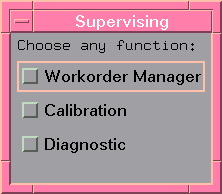
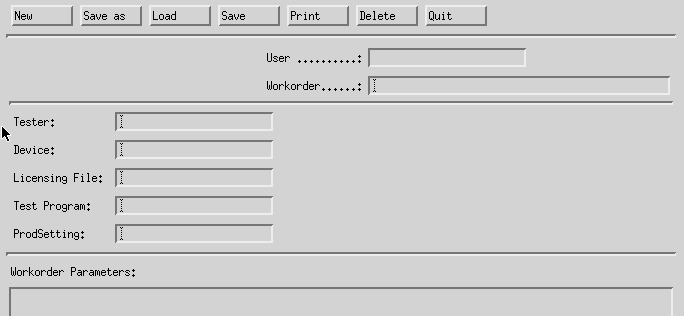
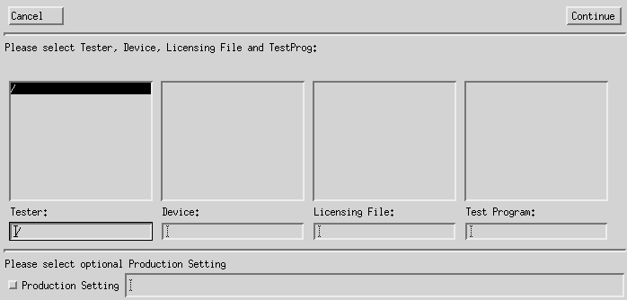
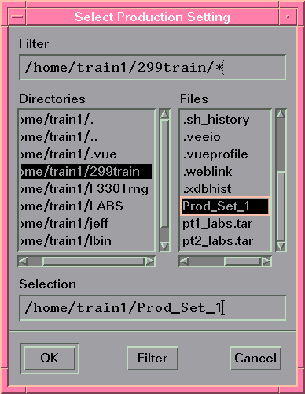
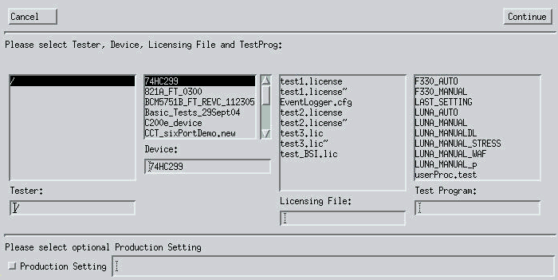
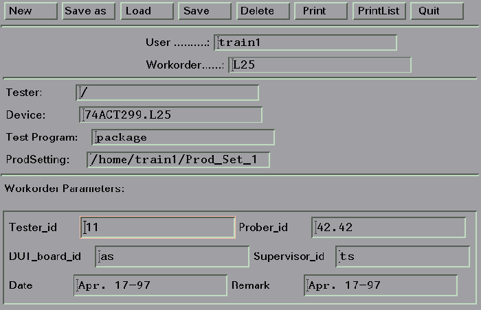
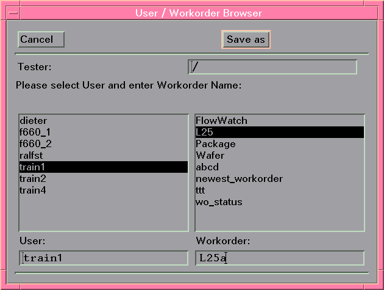

Creating New Workorders
Proceed as follows to build a new workorder:
- Start the software in either engineering or supervising mode.
- Click Supervise.
The Supervising shortcut menu appears. See the figure below.

- Click Workorder Manager.
The Workorder Manager screen appears, as shown below.

Note It is also possible to have an extra area in your Workorder Manager screen that displays the components of your test program (your test flow file, application file etc.). See Displaying the Test Program Components for further details. - Click the New button in the Workorder Manager screen.
A screen similar to that shown below appears.

The four scroll areas are for testers, devices, licensing files, and test programs respectively.
A tester is identified by its associated system controller. In order to detect a test system/system controller, the file system containing its /opt/hp93000/soc/org file must be mounted to the system from where you administer workorders (see "Org File" in Specifying the Device Path). The devices pointed to by the respective org files of the test system then make up for the contents of the other columns of the Tester/Device/TestProg Browser.
- Select a tester by either typing in the name of the tester, or highlighting the tester (using
the left mouse button) from the scroll list.
When you select a tester, all files and directories in the device path (seeSpecifying the Device Path) are shown in the Device scroll area. / indicates the tester you are currently logged on to.
- Select a device in the same way as you selected a tester.
When you select a device, all Test Programs are displayed in the Test Program scroll area. See the second figure below for example.
- Select a license file in the same way as you selected a tester.
Please note: Selecting a device license file overrules (but does not overwrite) the file specification made in the .technology file.
- Select a Test Program in the same way as you selected a tester.
- Optionally, click the Production Setting button in the lower left
window corner to select Production Settings.
A screen similar to the figure below appears.

These Production Settings will override the testflow settings defined in your testflow (see Accessing Testflow Settings).
- Select the desired Production Settings file by highlighting a file name in the Files
scroll list, and click OK.
The selected file name appears in the Production Setting textbox (see the figure below).

- Once you have selected tester, device, license file, test program and optional production
settings, click the Continue button.
The Workorder Parameters section of the workorder manager now appears. All entries that are defined as WORKORDER_MANAGER_INPUT in your application model file, appear as a parameter entry box in the Workorder Parameters section of the workorder manager. The screen shown below, for example, shows that
- Tester_id
- Prober_id
- DUT_board_id
- Supervisor_id
- Date
- Remark
are all defined as WORKORDER_MANAGER_INPUT in the wafer_auto application model file.

Note In the application model, the workorder parameters may have been defined of a particular type and with binding format requirements. In such a case, you may have to enter the required format, for example exactly 8 alpha characters followed by 4 numerals.
- Click the cursor over each entry box, and key in the desired values.
The software automatically echoes an error message if your entry is not in the correct format.
Note An alternative (and potentially quicker) way to create a new workorder is to load an existing workorder, change all necessary parameters, and then Save As-described next. - Click Save As
A screen similar to that shown below appears. This shows all operators (and the workorders assigned to them) on the current tester.

Anyone who has an account under the /users/ directory of the current tester (/users/dieter/, for example), and has a workorder directory (/users/dieter/workorder/, for example), appears in the Operator scroll area. If an operator name is highlighted, all workorders in this operator's directory are displayed in the Workorder scroll area. See Setting up Workorder Directories for further details.
- Highlight an operator name from the User scroll list.
- Move the cursor over the Workorder entry box and key-in a name for the
workorder.Note When naming work orders for usage with the operator console: Make sure that the work order name consists of numbers only. Do not use other characters like alphabetical or symbol.
- When you have finished assigning the workorder, click Save As.
The workorder is saved with the name you entered in the previous step.
Functional changes
- Introduced before SmarTest 6.3.2
- SmarTest 6.5.3: Naming of work orders when using the operator console